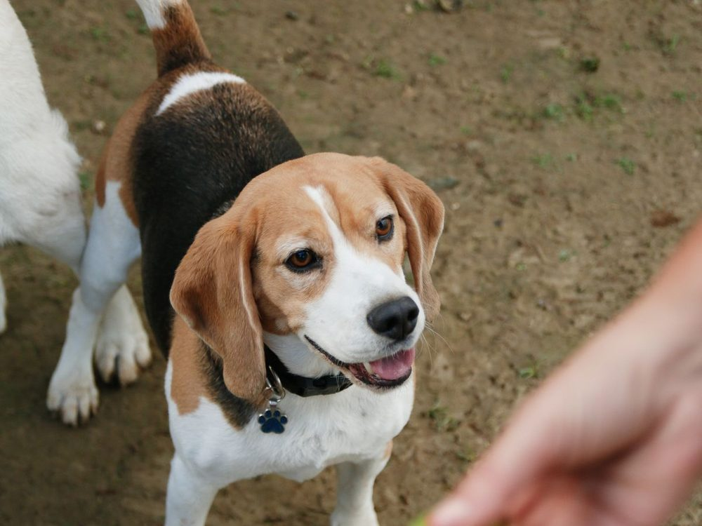

Founders’ Park Dog Park Lighted · large & small/timid areas
- Fenced Yes — “enclosed fencing,” per the town
- Water Yes — the town lists drinking fountains (dog-height bowls not specified)
- Shade Yes — “shaded areas” and shade structures
- Small-dog area Yes — separate small/timid and large-dog areas (four grass-play sections in all)
- Lighting Yes — the town calls it a “lighted dog park”
- Waste stations Yes
- Seating Yes
- Restrooms Not stated by the town for the dog park
- Hours 5:30 a.m.–10 p.m. daily, year-round
Opened March 21, 2026, Founders’ Park Dog Park replaced the town’s temporary Pocket Park for Pups (open since 2014, now closed). It has four separate grass-play areas — north and south pairs of small and large sections — plus enclosed fencing, shaded areas, drinking fountains, seating, and waste stations, and it’s lighted. Sections can close for turf reseeding (the south pair closed for two weeks in July), so check the town page before you go. Rules: carry a leash for each dog, leash on entry and exit, max three dogs per handler, dogs over 4 months and licensed/vaccinated with a visible tag, no dog treats or food, no smoking, no females in heat, children under 12 with an adult, and fill any holes your dog digs. Town of Queen Creek: Founders’ Park Dog Park.